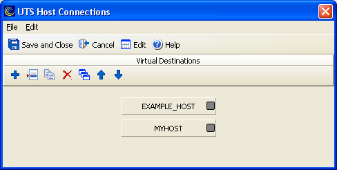

Managing connections
The T27 Host Connections dialog can be used to manage multiple host connections.
The work area contains one group used to configure the
virtual destinations:

The T27 Host Connections dialog contains the following
menu options:
- File
Save and Close
Print
Cancel and Close
- Edit
- Sort: Sorts the virtual destinations in alphabetical order.
The T27 Host Connections dialog contains the following
icons:
| Icon | Name | Description |
|---|---|---|
 |
Add new Destination | Click to add a new virtual destination. |
 |
Edit selected Destination | Click to edit the selected virtual destination. |
 |
Duplicate selected Destination | Click to duplicate the selected virtual destination. |
 |
Delete selected Destination | Click to delete the selected virtual destination. |
 |
Sort Destinations | Click to sort all configured virtual destinations in alphabetical order. |
 |
Move selected Destination Up | Click to move the selected virtual destination up one position. |
 |
Move selected Destination Down | Click to move the selected virtual destination down one position. |
You can use the following mouse actions in the T27
Host Connections dialog:
- Select an existing route or virtual destination
- Click a virtual destination. The selected virtual destination
name becomes bold and an orange box displays on the left side of the
virtual destination button.Note: The functions of left and right mouse button may be swapped by selecting the Mouse icon from the Windows Control Panel.
- Edit an existing route or virtual destination
- Double-click a virtual destination to open the configuration dialog and edit the required parameters.
- Change the order of virtual destinations
If you create multiple virtual destinations, you can customize the order of the virtual destinations. The order set in this dialog determines the order the virtual destinations appear in the Selected Connection Point drop-down menu.
To change the order, click the dark gray square on the right of the virtual destination button, while continuing to hold down the mouse button, drag the cursor to the place you want. When the cursor changes to a hand icon, release the mouse button.